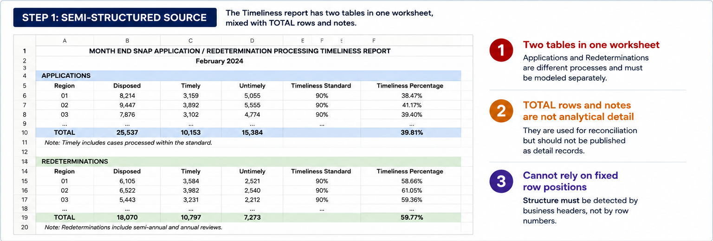
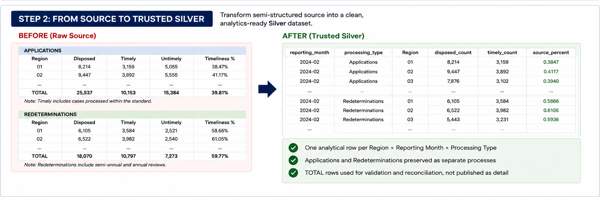

When is raw data actually ready for analytics?
A production-inspired data quality case from my SNAP Analytics Platform: turning public Excel reports into Trusted Silver through explicit structure, data contracts, business validation, reconciliation, and publication controls.
The Context
I built this case using public Texas SNAP reporting data. The source was designed for human reporting, not analytical pipelines.
Before building KPIs or dashboards, I needed to answer a more important question: what has to be true before downstream users should trust this data?
I worked across two source domains: county-level Eligibility/Caseload data and regional Timeliness reports. Each created a different kind of data quality problem.
From Human-Readable Excel to Analytical Records
The Eligibility files looked structured at first glance, but the raw reports contained embedded titles, formatted numeric values, non-county entities, naming inconsistencies, and mixed analytical populations.


A Different Problem: Two Logical Tables in One Worksheet
Timeliness introduced a different production challenge. Applications and Redeterminations appeared as separate logical tables inside the same worksheet, mixed with TOTAL rows and notes.


The Trusted Silver Workflow
I separated transformation from trust. A dataset does not become analytics-ready just because parsing and casting succeed.
Bronze preserves source evidence. Silver is the trust boundary where structure, schema, grain, business rules, and exceptions are explicitly checked before publication.
Three Production Lessons That Changed the Design
Validate the Validator
Eligibility initially produced 2,981 invalid reporting-entity failures. The source was not the main problem.
The validation reference contained only 9 counties. I replaced it with the full 254-county reference and treated reference data as a governed dependency.
Business Meaning → Data Type
A payment field failed integer conversion because the raw source contained legitimate cents.
Instead of truncating the value or choosing whichever cast worked, I changed the schema to preserve monetary precision.
Validation Gate ≠ Cleaning
Structure cleaning and type conversion do not prove business trust.
PASS can publish. WARNING preserves visible evidence. FAIL blocks Trusted Silver publication.
How I Troubleshot Failures
When a pipeline failed, I avoided changing business logic first. I narrowed the failure using a repeatable investigation path:
This mattered because a failure could come from source data, transformation logic, reference data, or an incorrect business assumption. The fix should happen in the layer that actually owns the problem.
The Result
254 Texas counties × 12 reporting months, published at a clear County × Reporting Month grain.
Eligibility/Caseload and Timeliness are both validated and ready for downstream Gold analytics modeling.
Timeliness is published separately at Region × Reporting Month × Processing Type, preserving Applications and Redeterminations as distinct operational processes.

What I Took Away
Data quality is not simply a cleaning step. It requires explicit decisions about analytical grain, business meaning, schema, reference data, exceptions, reconciliation, and failure behavior.
Automated tests verify the rules I wrote. Human validation helps confirm that I wrote the right rules.
Trusted Silver is earned through validation, not simply through transformation.